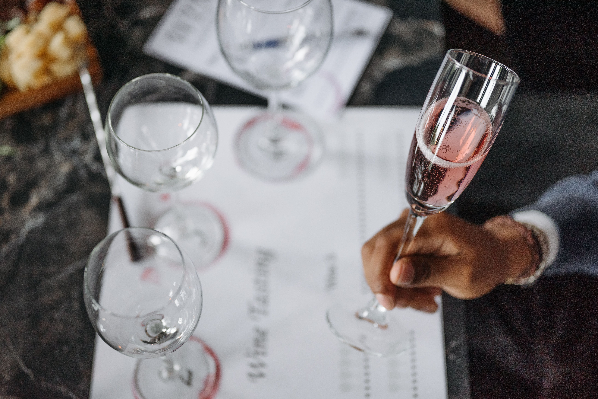
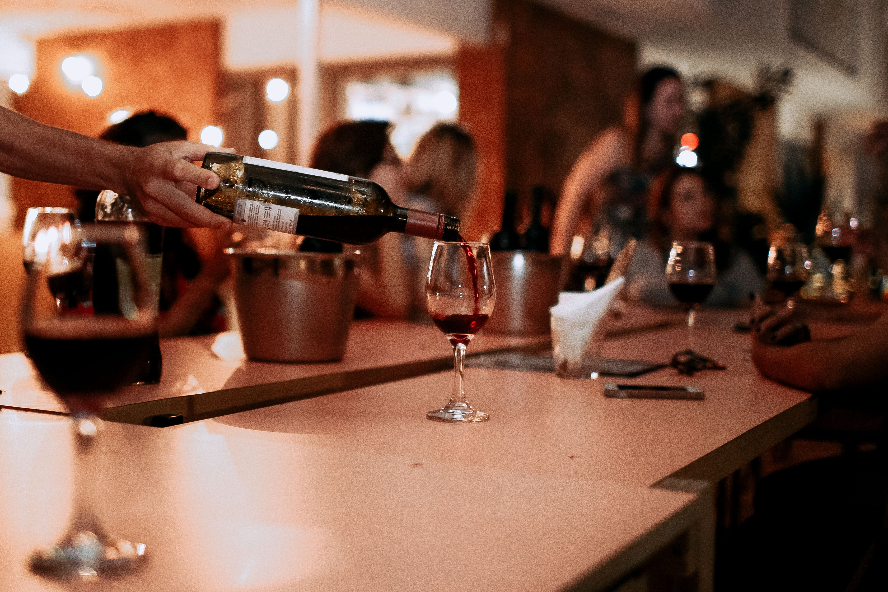
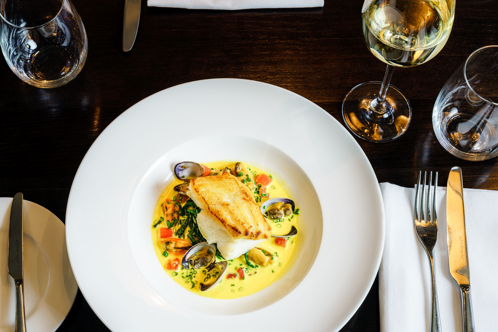

Bem-vindo ao Vinho em Foco! Aqui você encontrará notícias do universo dos vinhos, dicas de harmonização, curiosidades fascinantes e artigos rápidos para entender melhor essa bebida que encanta pessoas há milhares de anos.

Cada vez mais consumidores procuram vinhos orgânicos, sustentáveis e de pequenas vinícolas. A preocupação com a origem dos produtos vem impulsionando novas formas de produção e comercialização.
Regiões produtoras estão investindo em experiências imersivas, permitindo que visitantes conheçam vinhedos, participem de degustações e entendam todo o processo de produção.
O formato da taça ajuda a direcionar os aromas para diferentes partes do nariz, alterando a percepção dos sabores. Por isso, uma mesma bebida pode apresentar características distintas dependendo da taça utilizada.
Produzidos com a fermentação das cascas das uvas, apresentam maior concentração de taninos e corpo mais intenso.
Elaborados sem a presença das cascas durante a fermentação, costumam ser mais leves e refrescantes.
Resultam de um contato breve das cascas com o mosto, proporcionando cor rosada e características intermediárias entre tintos e brancos.
Possuem gás carbônico natural gerado por uma segunda fermentação, tornando a bebida mais leve e festiva.

Os taninos dos tintos ajudam a equilibrar a gordura das carnes, criando uma experiência gastronômica mais agradável.
A leveza e acidez dos brancos combinam perfeitamente com pratos à base de frutos do mar e peixes.
Versátil, o espumante harmoniza com uma ampla variedade de entradas e aperitivos.

Ao degustar um vinho, observe três aspectos:
Quanto mais você pratica, mais fácil se torna reconhecer as características de cada rótulo.